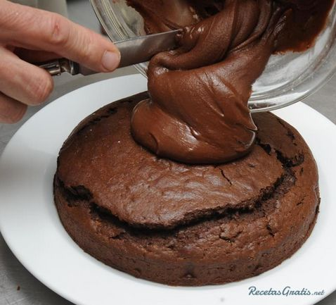
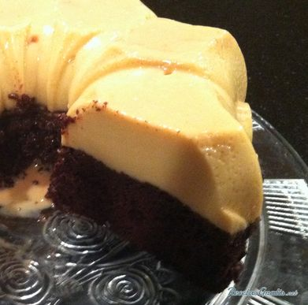
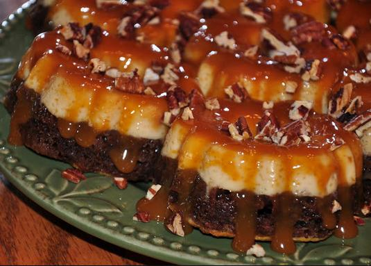

POSTRES
Pastel Imposible

Espectativa
Ingredientes:
- 8 unidades de Huevos
- 1 taza de Aceite
- 1 barra de Mantequilla
- 1 tarro de Cajeta
- 1 lata de leche condensada
- 1 lata de leche evaporada
- 2 cucharaditas de Maizena
- 2 cucharaditas de vainilla
Pasos:
- Se prepara de manera normal un pastel de sabor chocolate, que sea del normal no del esponjoso. Se le agregarán sólo 3 huevos y una taza de aceite de su preferencia (menos de oliva) se bate muy bien y listo, se vacía al molde previamente engrasado y bañado con la cajeta, si esta muy espesa la pueden entibiar ligeramente poniendola en el micro y luego bañan muy bien su(s) molde (s).
- Se licúan 5 huevos, 1 lata de condensada, 1 lata de leche evaporada, 2 cucharaditas de maizena, 2 cucharaditas de vainilla y se vacía con cuidado sobre la anterior masa del pastel de chocolate.
- Se mete al horno a 200ºC. por 30 minutos o según si usan para dos pasteles que bien salen de tamaño normal o uno grande pero recuerden debe ser rosca OK? Siendo molde grande 40 min. y a partir de ese tiempo le checan con un cuchillo o palillo largo, para ver si ya esta bien cocido y si no lo dejan otro ratito y lo checan de nuevo. Por lo pesado de los ingredientes del flan, este, quedara encima y abajo el de chocolate es decir al revés de como lo prepararon y quedara bañado con la cajeta.
- Pueden acompañar el pastel imposible con algo ligero ya que este es un postre muy denso, por ejemplo un sorbete de limón o un helado de yogur natural.





Este es un sitio de recetas rápidas que puedes hacer facilmente para una reunión, sorpresa, algo casual o simplemente para ti.